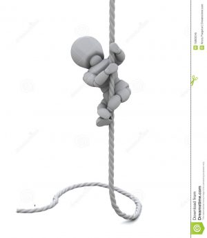
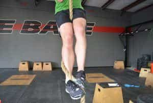
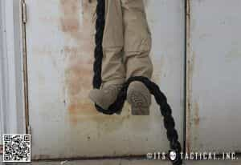
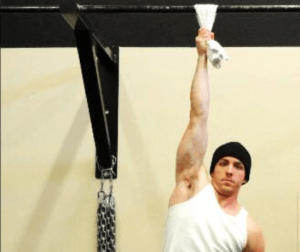

< < < Back
How (And Why) To Climb A Rope – Return Of Kings
Today’s article discusses an action that is simultaneously a practical skill and a fantastic strength building exercise that will work a majority of the muscles of the upper body, especially the muscles of the hands and fingers that don’t get used much (and you all know how much value I place on grip strength): rope climbing!
A Brief History
In one of his Convict Conditioning books, Paul Wade semi-humorously posits that the pull-up, and the various other pulling motions that we are capable of doing, are the first exercise that humanity invented, as it would highly useful for our arboreal ancestors to be able to pull up their own bodyweight. Rope is believed to have been invented around 30,000 years ago, when some early modern human figured out that braiding strands granted that compilation greater tensile strength than its individual components. And it can be presumed that the act of climbing said ropes started shortly thereafter.
The earliest fitness manuals that you can still find today, such as De Arte Gymnastica by Girolamo Mercuriale, or El Libro de Ejercicio Corporal by Cristobal Mendez, both praise the strength building qualities of climbing exercises such as rope and pole climbing. And for many years climbing exercises were seen as a necessity for the physical man until the decline of physical education that I have discussed in a previous article.
If you have any experience with rope climbing at all, it is likely in your gym class, a faded remnant of better days of physical education training in American public schools. You were likely given no preparatory steps to train your muscles and central nervous system before undertaking this Herculean task. A Herculean task that ended with you falling on your face, possibly tearing the palms of your hands open, and coming nowhere near the top of the rope. Dejected, you probably said something to what Principal Skinner is saying in the featured image, and then vowed to never climb a rope again. Certainly, that was my experience with the exercise for many years.
How to Climb a Rope
I feel there are two facets to the climbing of a rope: strength and technique. To put it simply, using certain techniques can make the climbing of a rope substantially easier than you think it is but you’re still going to need a large amount of hand, finger, and latissimus dorsi strength.
To begin with, let’s go over the various techniques you can use for climbing a rope:
1. The free climb
This is the climbing technique that most people instinctively know (or rather, instinctively try during their first failed attempts to climb a rope). Leaving your legs dangling in the breeze, pull up with just your arms and climb. As you might imagine, this is pretty tough. As such, it should be a part of your rope climbing repertoire as a way to maximize the effort you will have to exert—ie: if you want to build maximal strength, you’re going to have to use this.

But what if you actually need to climb ropes as a means of transportation? At that point, you’re going to want to make it a little bit easier, correct? How?
2. The S-Wrap Technique
One of two techniques taught in the military, this climbing technique utilizes the legs to take some of the weight off of the arms and thus make the climb a bit easier.
Grab a hold of the rope, and allow it to pass by your right hip, around your back, between your legs, and down to the feet. Put the rope under your right foot and then hold it in place with the other foot, as shown in the image below.

You should be able to essentially stand on one foot, while only holding it in place with the hands and other foot. Pull up with the hands and hold the position, and then unwrap your legs and reestablish your foot grip and “Stand” on the rope again.
3. The BUDS technique
The other military technique involved in rope climbing, it’s similar to the S-Wrap in that it utilizes the rope as a “platform” to take weight off your arms, but the positioning is different. And personally I find this the easier of the two.
Let the rope fall past your hip and down to your feet. Place the rope under your right foot, and lift it up and pinch it against the right foot with the left foot.

That’s it!. Just pull yourself up with both hands, then lift your feet and reestablish your feet position higher up on the rope, and repeat. Naturally with all these techniques, with repetition comes increased speed and ease.
Those techniques are good, and do work, but they do reduce some of the strain on your arms, thus making them not as effective in terms of building strength. Also, they obviously do not work on pole climbing. This is where grip training comes in:
Grip Training
I have already written several articles on grip training, so rather than me being redundant you can go read those. However, one technique I didn’t discuss in those previous articles is the mere act of progressive hanging.
Yes, the mere act of hanging is a great way to train the hands and forearms, as well as the shoulder girdle. And with all exercises worth doing, it can be done in progressions.
From hanging from a bar with two hands, to hanging with one hand, to two hands on a towel, to, ultimately hanging with one hand gripping a towel, I have found that the towel hang is the most relevant exercise specifically for rope climbing. Hold each hang exercise for one minute before progressing further.

Thus you can learn to climb a rope, and develop all the strength associated with it, simply (albeit not necessarily easily)
Read More: How To Get In Shape And Practice Your Fighting Skills